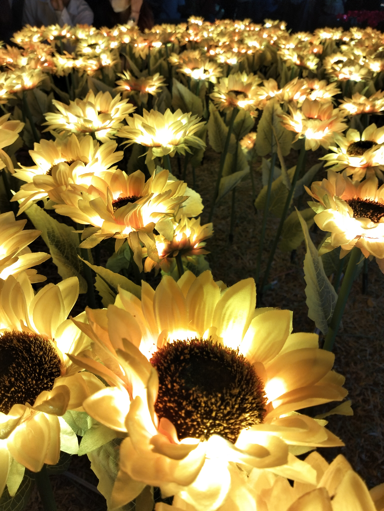
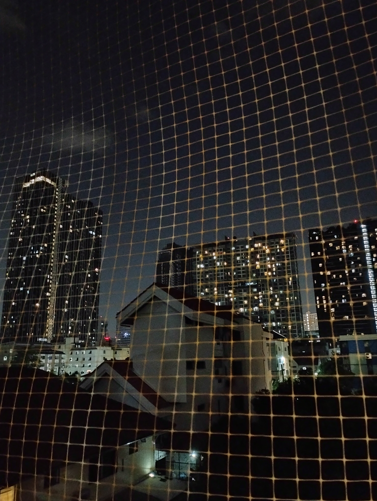
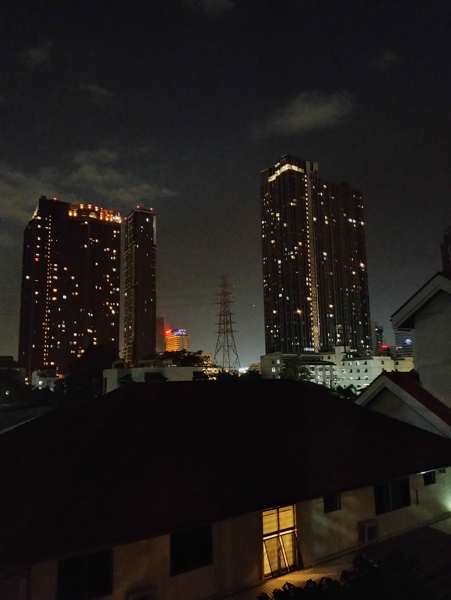
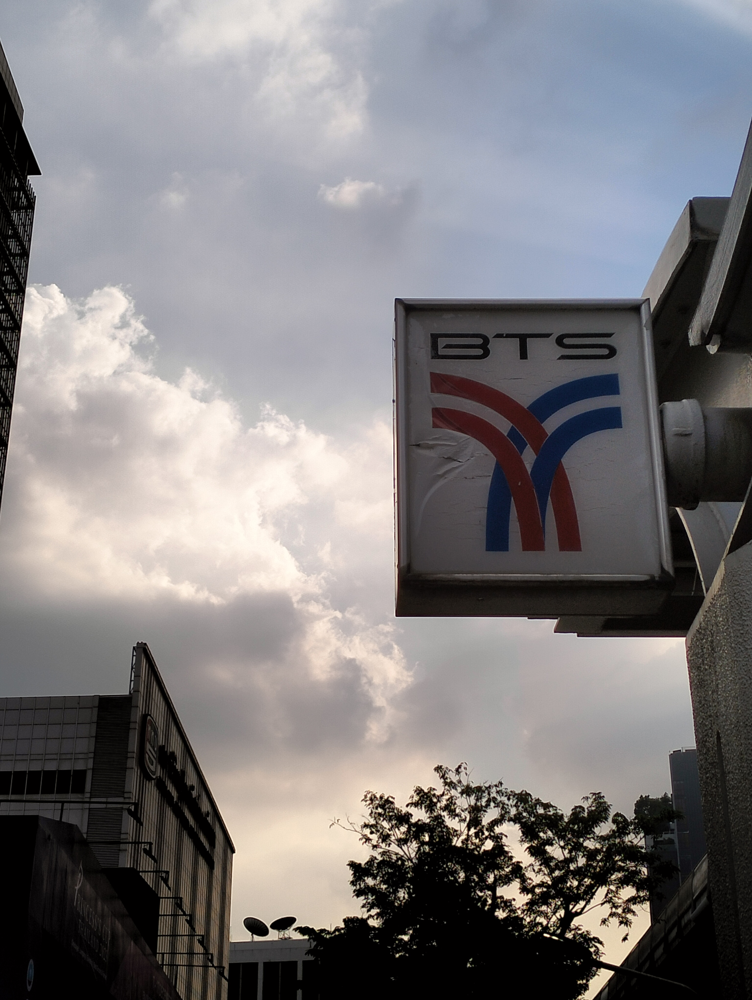
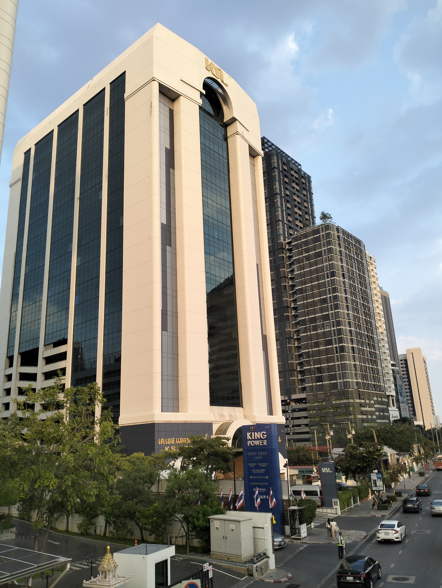
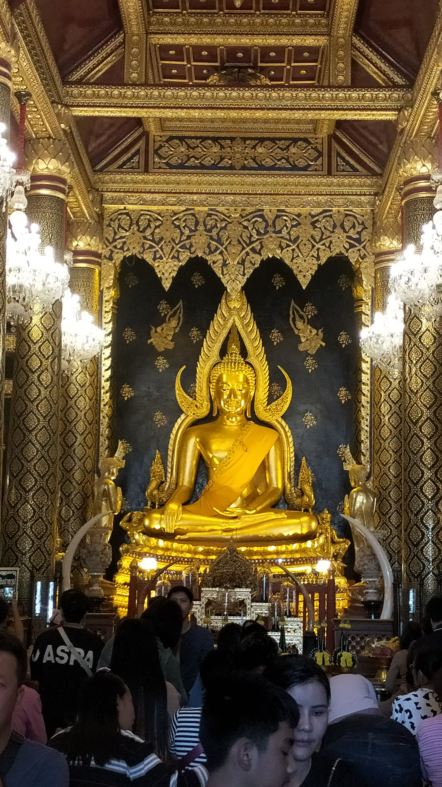
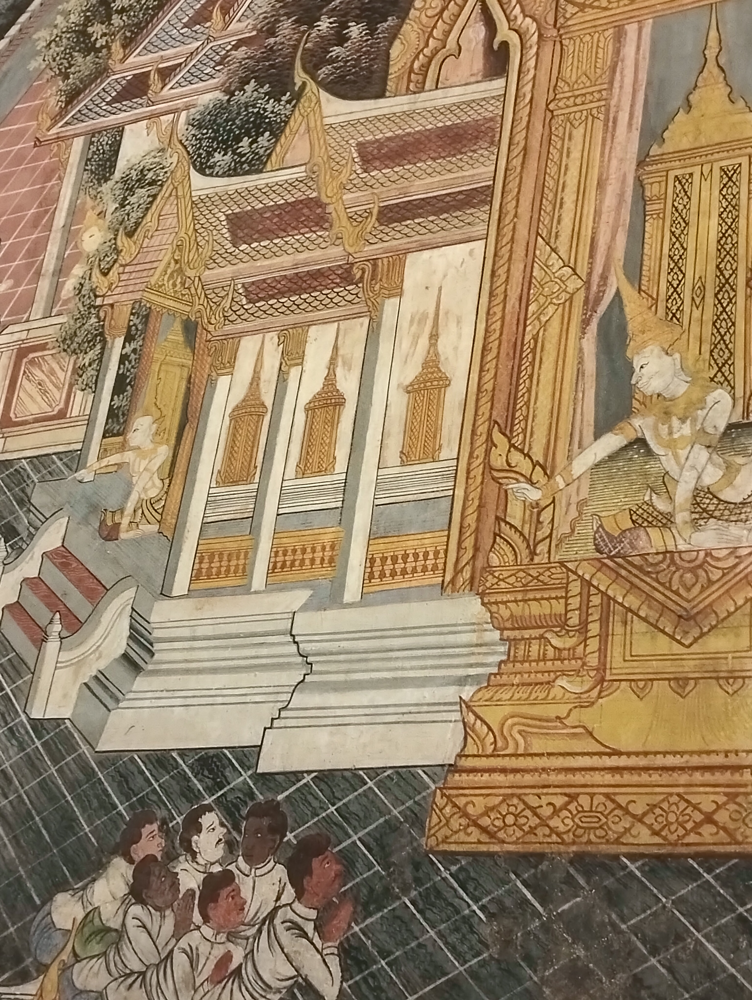

Road to Travel
back
*คำอธิบายหากต้องการย้อนหน้ากลับ โปรดชี้เมาส์ไปที่หัวข้อเรื่องและกด back*
เหล่าดอกทานตะวันในคืนวันลอยกระทง ที่มีคนสร้างขึ้นถูกจัดสรรขึ้นอย่างดีเพียงเพื่อให้ได้ชมในเทศกาลหนึ่ง เมื่อหมดเทศกาลไปละยังมีใครจะเดินทางมาชมอยู่ไหม
มากรุงเทพเพียงลำพัง และได้ห้องพักที่วิวตรงระเบียงหลังทำให้เห็นได้ชัด ทั้งตึกระฟ้ากับบ้านเดี่ยวเล็กๆ ที่อยู่ห่างกันไม่ถึง5กิโล อะไรทำสิ่งที่แตกต่างกันนี้ อยู่ใกล้กันเพียงนี้นะ หรือมันจะเหมือนคนเรานะที่อยู่ใกล้ๆแต่กลับมีความรู้สึกและนิสัยที่ต่างกัน
พอได้ถ่ายผ่านตะข่าย ทำให้เห็นชัดไปอีกนะ ทั้งท้องฟ้า ตึกระฟ้า และ บ้านเดี่ยวหลายหลังที่ติดกัน เรากลับมองสิ่งเหล่านี้ เป็นทั้ง ผู้คน อารมณ์ และ ความคิด ที่แตกต่างกันแม้จะอยู่ที่ๆใกล้เคียงกัน

สวยดีนะ แต่เข้าชมใกล้ไปกว่านี้ไม่ได้แล้ว
รอยยับจากป้ายทำให้ได้รู้เลยว่า มันผ่านอะไรมาบ้าง สิ่งที่ไม่เปลี่ยนแปลงมักทิ้งร่องรอยที่เด่นชัดเสมอ
เป็นภาพที่ทำให้เราเห็นคุณค่าของเวลาบางอย่างนะ เมื่อเวลาผ่านไปเพียง5นาทีพื้นที่ตรงนี้กลับเต็มไปด้วยรถและผู้คน จนทำให้คิดว่าคนเราจำเป็นต้องรีบมากขนาดนี้เลยหรอ
ผู้คนมากมายต่างถ่ายรูปกับพระพุทธรูปแม้กระทั่งตัวเรา อะไรทำให้เราไหลตามผู้คนนะ

เราลองมองหาสิ่งรอบตัวใหม่ๆ กลับเจอสิ่งที่สวยงาม และ เด่นไม่แพ้กัน พอเลิกไล่ตามผู้คน เรากลับได้ภาพที่ไม่มีใครถ่ายและสวยงามมากๆรูปหนึ่งเลย
" ㅤㅤㅤㅤㅤㅤㅤㅤㅤㅤㅤㅤㅤㅤㅤㅤㅤㅤㅤㅤㅤㅤㅤㅤ"
กลุ่มผู้คนและเทวดา
ความว่างเปล่านี้คือสิ่งปกติ ไม่มีเสียง ไม่มีความรู้สึกถึงผู้คน แต่เรากลับรู้สึกผิดปกติ
พระพุทธรูปที่วางเรียงกันมีสิ่งเดียวกันที่เหมือนคือ ท่านั่งสมาธิ หลายๆอย่างแตกต่าง แต่กลับมีความรู้สึกเหมือนกันเป็นอันหนึ่งอันเดียว สถานที่ที่หลากหลายผู้คนที่แตกต่าง มาเพราะหลายเหตุผล แต่กลับมาในสถานที่เดียวกัน